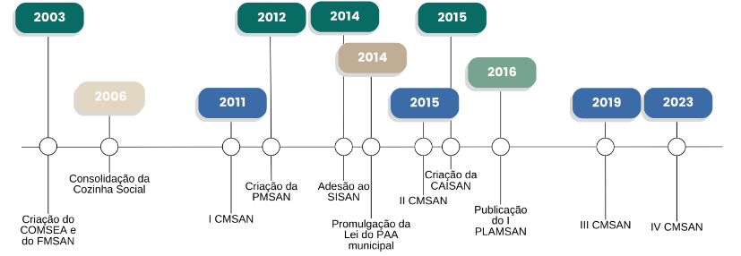

O Plano Municipal de Segurança Alimentar e Nutricional (PMSAN) é um documento estratégico que visa promover a segurança alimentar e nutricional em nível local. Os planos são desenvolvidos em colaboração com diversas partes interessadas, como autoridades municipais, organizações da sociedade civil, instituições de pesquisa e setor privado.
O principal objetivo de um Plano Municipal de SAN é garantir que todos os habitantes de uma área geográfica tenham acesso físico, social e econômico a alimentos em quantidade e qualidade suficientes, que atendam às suas necessidades nutricionais e preferências culturais para uma vida saudável e ativa.
